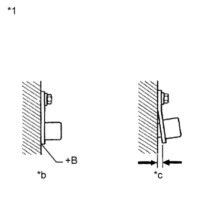

DTC C1403 Неисправность правого заднего датчика частоты вращения |
DTC C1273 Слабый выходной сигнал заднего правого датчика частоты вращения (DTC режима активной диагностики) |
DTC C1274 Слабый выходной сигнал заднего левого датчика частоты вращения (DTC режима активной диагностики) |
DTC C1404 Неисправность левого заднего датчика частоты вращения |
| Код DTC | Условие обнаружения DTC | Неисправный участок |
| C1403 C1404 | Выполняется одно из следующих условий:
|
|
| C1273 C1274 | Регистрируется только в режиме активной диагностики. |
|
| 1.ПРОВЕРЬТЕ МОНТАЖ ЗАДНЕГО ДАТЧИКА ЧАСТОТЫ ВРАЩЕНИЯ |
|  |
Проверьте монтаж датчика частоты вращения (Нажмите здесь).
| *1 | Задний датчик частоты вращения |
| *a | Отсутствие зазора |
| *b | OK |
| *c | NG |
|
| ||||
| OK | |
| 2.ПРОВЕРЬТЕ НАКОНЕЧНИК ЗАДНЕГО ДАТЧИКА ЧАСТОТЫ ВРАЩЕНИЯ |
Снимите задний датчик частоты вращения (Нажмите здесь).
Проверьте наконечник датчика частоты вращения.
|
| ||||
| OK | |
| 3.ПРОВЕРЬТЕ РОТОР ЗАДНЕГО ДАТЧИКА ЧАСТОТЫ ВРАЩЕНИЯ |
Снимите ступицу и подшипник заднего колеса (Нажмите здесь).
Проверьте ротор датчика частоты вращения.
|
| ||||
| OK | |
| 4.СНИМИТЕ ПОКАЗАНИЯ ПОРТАТИВНОГО ДИАГНОСТИЧЕСКОГО ПРИБОРА (RR/RL WHEEL SPEED) |
Выключите зажигание
Подсоедините портативный диагностический прибор к DLC3.
Запустите двигатель.
Включите портативный диагностический прибор.
Войдите в следующие меню: Chassis / ABS/VSC/TRC / Data List.
| Информация на дисплее прибора | Измеряемая величина / диапазон измерения | Нормальное состояние | Замечание по диагностике |
| RR Wheel Speed | Показание правого заднего датчика частоты вращения / мин.: 0 км/час (0 миль в час), макс.: 326 км/час (202 мили в час) | Действительная скорость колеса | Плавно изменяется во время разгона/замедления. |
| RL Wheel Speed | Показание левого заднего датчика частоты вращения / мин.: 0 км/час (0 миль в час), макс.: 326 км/час (202 мили в час) | Действительная скорость колеса | Плавно изменяется во время разгона/замедления. |
Проверьте показание датчика частоты вращения на экране портативного диагностического прибора.
|
| ||||
| OK | ||
| ||
| 5.ЗАМЕНИТЕ ЗАДНИЙ ДАТЧИК ЧАСТОТЫ ВРАЩЕНИЯ |
Выключите зажигание.
Замените задний датчик частоты вращения (Нажмите здесь).
| ДАЛЕЕ | |
| 6.СНОВА ПРОВЕРЬТЕ DTC |
Удалите коды DTC (Нажмите здесь).
Запустите двигатель.
Совершите поездку на автомобиле со скоростью не менее 40 км/час (25 миль в час) длительностью 60 с или более.
Проверьте, выводится ли тот же DTC (Нажмите здесь).
| Результат | Следующий шаг |
| DTC не выводится | А |
| DTC выводится | B |
|
| ||||
| А | ||
| ||